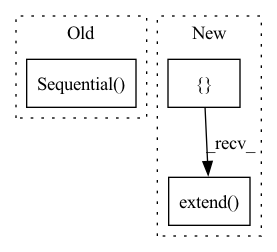

Pattern ID :23889

Before Change
self.groups = groups
self.base_width = width_per_group
self.conv1 = nn.Sequential(
nn.Conv2d(3, self.inplanes, kernel_size=7, stride=2, padding=3, bias=False),
norm_layer(self.inplanes) if has_bn else nn.Identity(),
nn.ReLU(inplace=True),
nn.MaxPool2d(kernel_size=3, stride=2, padding=1)
)
self.layers = [self._make_layer(block, 64, layers[0], has_bn=has_bn and (bn_block_num > 0))]
for num in range(1, len(layers)):
self.layers.append(self._make_layer(block, features[num], layers[num], stride=2,
After Change
self.relu = nn.ReLU(inplace=True)
self.maxpool = nn.MaxPool2d(kernel_size=3, stride=2, padding=1)
self.layers = []
self.layers.extend(self._make_layer(block, 64, layers[0], has_bn=has_bn and (bn_block_num > 0)))
for num in range(1, len(layers)):
self.layers.extend(self._make_layer(block, features[num], layers[num], stride=2,
dilate=replace_stride_with_dilation[num-1],
has_bn=has_bn and (num < bn_block_num)))
In pattern: SUPERPATTERN
Frequency: 3
Non-data size: 3
Instances
Fragment ID: 74412084
Project Name: tsingz0/pfl-non-iid
Commit Name: f1c02135d9dae7a8b9e881e04ecd65da23165e94
Time: 2023-03-29
Author: 2719584131@qq.com
File Name: system/flcore/trainmodel/resnet.py
M Class Name: ResNet
N Class Name: ResNet
M Method Name: __init__(12)
N Method Name: __init__(12)
M Parent Class: nn.Module
N Parent Class: nn.Module
M File Name: system/flcore/trainmodel/resnet.py
N File Name: system/flcore/trainmodel/resnet.py
M Start Line: 162
M End Line: 181
N Start Line: 162
N End Line: 182
'>
Before Change
self.input_feat_len = input_feat_len
self.net = nn.Sequential(
nn.Linear(self.input_feat_len, self.input_feat_len*3),
nn.ReLU(),
nn.Linear(self.input_feat_len*3, self.input_feat_len*3),
nn.ReLU(),
nn.Linear(self.input_feat_len*3, self.input_feat_len),
nn.ReLU(),
nn.Linear(self.input_feat_len, 1)
)
def forward(self, x: torch.Tensor) -> torch.Tensor:
return self.net(x)
After Change
self.num_layers = num_layers
self.width = width
self.linears = nn.ModuleList([nn.Linear(self.input_feat_len, width)])
self.linears.extend([nn.Linear(width, width) for i in range(1, self.num_layers-1)])
self.output = nn.Linear(width, 1)
def forward(self, x: torch.Tensor) -> torch.Tensor:
for layer in self.linears:
'>
Fragment ID: 74412083
Project Name: microsoft/archai
Commit Name: de9f58e7d18749d3dc65f6edada0285fb264dd04
Time: 2022-12-16
Author: dedey@microsoft.com
File Name: archai/nas/predictive_dnn_ensemble.py
M Class Name: FFEnsembleMember
N Class Name: FFEnsembleMember
M Method Name: __init__(4)
N Method Name: __init__(2)
M Parent Class: nn.Module
N Parent Class: nn.Module
M File Name: archai/nas/predictive_dnn_ensemble.py
N File Name: archai/nas/predictive_dnn_ensemble.py
M Start Line: 90
M End Line: 103
N Start Line: 97
N End Line: 106
'>
Before Change
self.use_res_connect = self.stride == 1 and in_channels == out_channels
self.inv_block = nn.Sequential(
nn.Conv2d(in_channels, in_channels * expand_ratio, 1, 1, 0, bias=False),
nn.BatchNorm2d(in_channels * expand_ratio),
nn.PReLU(),
nn.Conv2d(in_channels * expand_ratio, in_channels * expand_ratio, 3, stride, 1,
groups=in_channels * expand_ratio, bias=False),
nn.BatchNorm2d(in_channels * expand_ratio),
nn.PReLU(),
nn.Conv2d(in_channels * expand_ratio, out_channels, 1, 1, 0, bias=False),
nn.BatchNorm2d(out_channels),
SELayer(out_channels, 8, nn.PReLU, outp_size)
)
def forward(self, x):
if self.use_res_connect:
return x + self.inv_block(x)
After Change
hidden_dim = int(round(inp * expand_ratio))
self.use_res_connect = self.stride == 1 and inp == oup
layers = []
if expand_ratio != 1:
// pw
layers.append(ConvBNReLU(inp, hidden_dim, kernel_size=1))
layers.extend([
// dw
ConvBNReLU(hidden_dim, hidden_dim, stride=stride, groups=hidden_dim),
// pw-linear
nn.Conv2d(hidden_dim, oup, 1, 1, 0, bias=False),
nn.BatchNorm2d(oup),
])
self.conv = nn.Sequential(*layers)
def forward(self, x):
if self.use_res_connect:
'>
Fragment ID: 74412081
Project Name: opendr-eu/opendr
Commit Name: 18da6a5d3ed5c2a291cb9c600a9fe4e5e17e5671
Time: 2021-01-26
Author: ptosidis@gmail.com
File Name: src/perception/face_recognition/algorithm/backbone/model_mobilenet.py
M Class Name: InvertedResidual
N Class Name: InvertedResidual
M Method Name: __init__(5)
N Method Name: __init__(6)
M Parent Class: nn.Module
N Parent Class: nn.Module
M File Name: src/perception/face_recognition/algorithm/backbone/model_mobilenet.py
N File Name: src/perception/face_recognition/algorithm/backbone/model_mobilenet.py
M Start Line: 111
M End Line: 131
N Start Line: 73
N End Line: 87